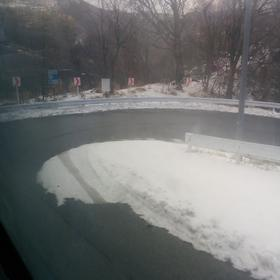
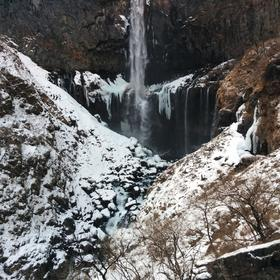
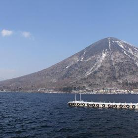
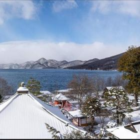
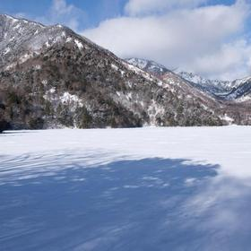
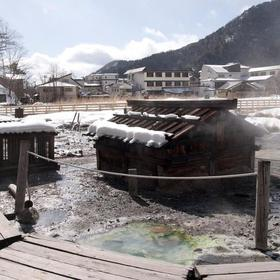

07:00🍜 เช้าที่พัก (ของที่ซื้อไว้คืนก่อน)40 น.
¥500/คน
🚐 จัมโบ้แท็กซี่มารับหน้าที่พัก

08:00🚕 จัมโบ้แท็กซี่มารับ · ขึ้นถนนอิโรฮะซากะ40 น.
เหมาทั้งวัน ¥60,000/คัน = ฿1,971/คน
🚐 จัมโบ้แท็กซี่ ถนนอิโรฮะซากะ·17 กม.·40 น.

08:40🚕 น้ำตกเคกง + ลิฟต์ลงจุดชมวิว50 น.
¥570/คน
📸 จุดถ่ายรูป: น้ำตกเคกงจากจุดชมวิวฐาน เห็นแท่งน้ำแข็งสองข้าง
🚶 เดินจากลานจอดน้ำตกเคกง·0.5 กม.·8 น.

09:40🥾 ทะเลสาบชูเซนจิ เดินริมทะเลสาบ50 น.
ไม่เสียค่าเข้า
🚐 จัมโบ้แท็กซี่เลียบทะเลสาบขึ้นเขา·17 กม.·35 น.

10:45⛩️ ขึ้นเขาต่อไปยูโมโตะ35 น.
รถรอให้ตลอดวัน
🚶 เดินจากจุดจอด·0.3 กม.·5 น.

11:20⛩️ ทะเลสาบยูโนโกะ (น้ำแข็ง)40 น.
ไม่เสียค่าเข้า
📸 จุดถ่ายรูป: ผิวทะเลสาบยูโนโกะที่จับน้ำแข็งทั้งผืน
🚐 จัมโบ้แท็กซี่ลงมาฝั่งโชบุกาฮามะ·10 กม.·20 น.
12:00🍜 กลางวัน — Shobugahama Rest House / โซบะ1 ชม.
¥1,200/คน
🚐 จัมโบ้แท็กซี่กลับขึ้นยูโมโตะ·10 กม.·20 น.

13:00♨️ ออนเซ็นสาธารณะยูโมโตะ1 ชม. 30 น.
¥600/คน · เปิดแค่ 10:00–15:00
🚐 จัมโบ้แท็กซี่ ลงถนนอิโรฮะซากะ·25 กม.·1 ชม.
14:40⛩️ ลงเขากลับนิกโก้1 ชม.
🚐 รถส่งถึงหน้าที่พัก
15:40🏨 พักที่ที่พัก1 ชม. 20 น.
🚶 เดินจากที่พัก·0.5 กม.·7 น.
17:00🍜 เย็น — Ramen Bonten ราเมงเกลือ + เบียร์1 ชม. 30 น.
¥1,500/คน